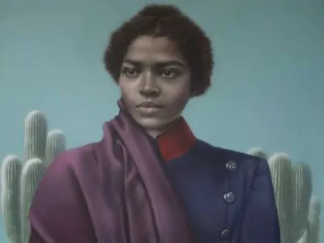

¿Quién fue María Remedios del Valle?
María Remedios del Valle nació en Buenos Aires alrededor de 1766. Fue una mujer afroargentina que participó en diferentes momentos de las luchas por la independencia de nuestro país.
Durante las campañas militares acompañó al Ejército del Norte, donde realizó tareas de asistencia a los soldados heridos y también participó en los combates.
Su valentía y compromiso hicieron que fuera reconocida como capitana y que con el tiempo recibiera el nombre de “Madre de la Patria”.
Principales acontecimientos de su vida
- Participó en la defensa de Buenos Aires durante las Invasiones Inglesas.
- En 1810 se incorporó a la expedición al Alto Perú.
- Participó en las batallas de Tucumán y Salta.
- También estuvo presente en Vilcapugio y Ayohuma.
- Fue reconocida con el grado de capitana.
- Después de la guerra, recibió reconocimientos y una pensión por sus servicios.
- Falleció el 8 de noviembre de 1847.
Personajes relacionados
A lo largo de su trayectoria, María Remedios del Valle estuvo relacionada con diferentes figuras importantes de las guerras de independencia.
- Manuel Belgrano
- Martín Miguel de Güemes
- Juan Antonio Álvarez de Arenales
- Juan José Viamonte
Estas personas estuvieron relacionadas con las campañas militares y con el proceso de independencia en el que participó María Remedios del Valle.
Su relación con Manuel Belgrano
Manuel Belgrano fue una de las figuras más importantes relacionadas con la trayectoria de María Remedios del Valle. Durante las campañas del Ejército del Norte, ella se destacó por asistir y acompañar a los soldados.
Su compromiso y valentía hicieron que fuera reconocida como capitana. Con el tiempo, los soldados también comenzaron a llamarla “Madre de la Patria”.
Línea de tiempo
- c. 1766: Nace en Buenos Aires.
- 1807: Participa en la defensa de Buenos Aires durante las Invasiones Inglesas.
- 1810: Se incorpora a la expedición al Alto Perú.
- 1812-1813: Participa en campañas y batallas junto al Ejército del Norte.
- 1827: Su historia vuelve a ser reconocida públicamente y comienza el reclamo por una pensión.
- 1847: Fallece en Buenos Aires.
¿Quién fue María Remedios del Valle?

María Remedios del Valle nació en Buenos Aires alrededor de 1766...
Volver al inicio